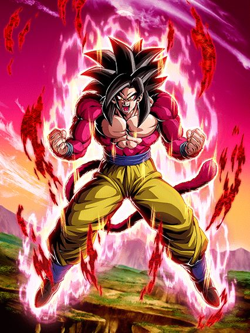
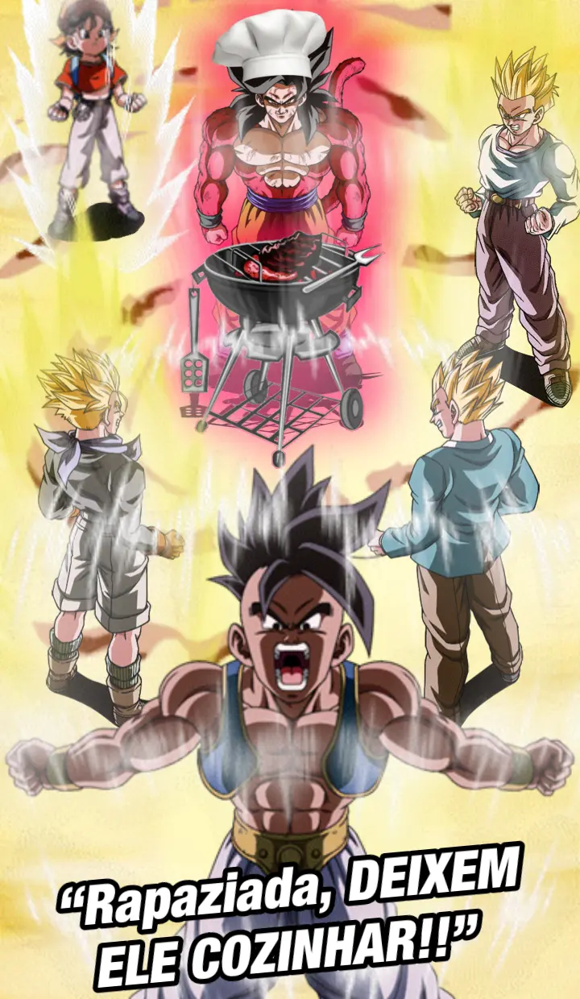

GOKU SSJ4 WOOOOOOO
Essa foi hype slk, o rapaz ssj4 finalmente chegando pro global, os eventos e tals, junto com a mecânica de orbs de link skill, bem poggers no geral em relação a conteúdo.

EU AMO EU AMO ESSE CARD.
O goku é extremamente hype, animações lindas, perfeitas, mas ele começa devagar.
Ele tem um dano maneiro, com 50% de chance de critar e ainda compartilha 6/7 links com os macacos do sétimo aniversário.
Ele precisa ficar no slot 1 obrigatoriamente, não é tipo o vegeta e trunks, ele realmente precisa ficar ali, já que no slot 1 ele tem 40% de redução de dano e 70% de DEF a mais.
Uma coisa é que essa defesa a mais é ativada quando o goku recebe OU desvia 1 ataque, oq é bem diferente e ajuda demais, só tem um problema…
No geral o goku tem uma defesa decente e um dano maneiro, mas ele se resume a uma coisa em específico, LEVAR 5 ATAQUES para ativar a standby dele, e vc PRECISA ativar a standby o quanto antes pra seguir em eventos mais difíceis
Esse é o único problema, pq ele precisa levar esses 5, ele não pode desviar de jeito nenhum, tanto que a estratégia é deixar ele 99% se necessário, mas NUNCA ativar o 5 de desvio que tem no hidden potential
Enfim, tomando os 5 ataques vc pode trocar para o uub.

Invencível.
O uub é uma parede impossível de quebrar, e é a única standby capaz de rivalizar com o vegeta dos Z boys (na minha honesta opinião eles são melhores, dá pra entender o pq depois).
O rapaz tem 300% de DEF, e a cada orb pego, são 10% de redução de dano (sim, pegar 10 orbs te deixa com 100%, e não é muito difícil) e humildemente ganha defesa ativa caso vc pegue 3 orbs, oq nem era necessário mas, pq não, né?
Ele tmb tem algo insano, q é um suporte de 70% de DEF por 2 TURNOS sem condição, oq é absurdo e torna qualquer personagem do time melhor, é completamente insano.
O uub por algum motivo tem uma nulificação de supers desarmados, oq é estranho pq não é como ele precisasse, mas é legal que incluíram, eu acho
Mas calma lá que nem tudo são flores, agr vem o problema do rapaz
Tinham que zuar o card com alguma coisa, e escolheram fazer isso colocando a mecânica de mudar orbs aleatoriamente pra INT, oq ehh.. vc já sabe
Claro, o uub é um tank e vc não precisa pegar 70 mil orbs já q ele ganha defesa ativa só com 3, mas entende que as vezes nem isso vc consegue por causa do orb change podre? É triste cara
Enfim, tirando isso, o uub só dura um turno basicamente, já q quando vc voltar vc já tem q transformar, se não a standby acaba
Mas carregar ela é a coisa mais fácil do mundo, já que ela carrega pegando orbs e cada orb vale por 2, oq torna quase impossível ver a standby incompleta
Mas enfim, quando o contador chegar a 30 orbs, pegue sua churrasqueira e comece a cozinhar.

Mas será que crita?
Se vc tinha alguma, qualquer reclamação sobre o goku ssj4, ela não existe mais a partir daqui.
O goku se torna o card perfeito, já q ele começa curando 77% da sua vida pq sim, ele pode
Ele já chega no turno tendo 50% de redução de dano, chegando facilmente em mais de 500k de DEF, tendo defesa ativa no primeiro turno pra garantir q vc não vai levar dano, e ele ainda completa com um ataque absurdamente alto, sendo 15 milhões o mínimo do mínimo que ele pode fazer
E por algum motivo ele tem muitas chances de crítico diferentes
Pq tantos críticos? Não sei, mas estou aceitando.
Vale mencionar que com 24 de Ki, além do crítico ele ganha 59% de ATK a mais, oq só deixa ele mais forte doq ele já é
Em resumo, o goku é um card que finaliza qualquer batalha pra vc, já que ele não vai tomar dano de jeito nenhum e vai dar um dano muito alto e que nenhum boss tanka tão facilmente
Eu não estava brincando quando disse que ele cozinhava.

Claro, leva um tempo e um pouco de RNG até o full power sair, mas quando ele aparece, é pra garantir que você termine a luta do jeito mais fácil e tranquilo.

Pessoa chamada pure saiyans:
Esse baby é um card genérico anti-saiyajin, se estiver contra pure ou hybrid saiyan ele é decente e se não estiver, você não tem card, cabou.
SE ele estiver contra um pure ou hybrid, ele tem crítico garantido e um dano maneiro, e ele tem big bad bosses, é maneiro.

Ótimo eza, MAS OQ ISSO TÁ FAZENDO AQUI??
Esse eza é legitimamente muito bom e facilmente entra pros top 10 ezas de dokkan fest, mas o momento que ele saiu não faz nenhum sentido 💀💀
Sobre o card em si, o bills é um personagem stacker que é um tank em certas condições
Ele tem 40% de redução de dano caso pegue 3 orbs e consegue ter 70% de redução de dano caso vc pegue 7 orbs (esses 30% extra só estão ativos antes de vc atacar mas ehhh), infelizmente ele não é um orb changer naturalmente, ele só muda orbs pra rainbow se estiver contra um realm of gods (oq faz dele eficaz na red zone dismal future mas nem tanto em outras)
Ele tmb ganha 150% de ATK e DEF no turno depois de levar um golpe, oq tá ali eu acho
O buff é bom, mas não era melhor ele buildar isso doq correr o risco de não levar um ataque antes de atacar?
E ele stacka ATK no super, ou seja, caso vc pegue bastante orbs e leve um ataque antes, vc vai dar bastante dano e tankar legal praticamente tudo, oq faz do bills um ótimo personagem
A active dele tem o mesmo efeito antes do eza, mas 50% de ATK e DEF a mais quando usa a active faz uma grande diferença slk..
Certamente um dos meus momentos favoritos quando o bills aparece pra ajudar o goku ssj4 a derrotar o baby, tá no nível do super 17 e super buu.
Você chegou ao fim dessa página!
Obrigado por ler tudo, e fica a vontade pra ver outras